WeGo NERO
Studio
Policy training · Robot deployment
This guide explains what NERO Studio does, what every control on the panel is for, and how to run a session from first launch to a trained policy working on the robot.
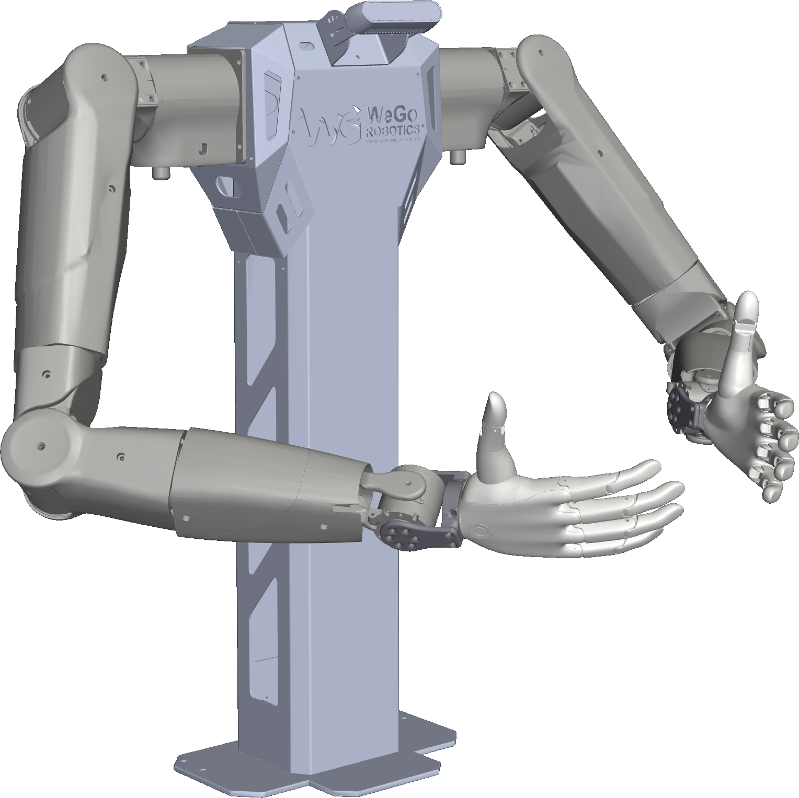
About this guide
| Audience | Operators and developers who teleoperate NERO from VR, record demonstrations, train policies and run them on the robot |
| Sources | The user guide in the NERO Studio repository (docs/nero-studio-guide.md, 2026-11-05) |
| Read with | AgileX NERO Operator Manual (Korean; arm connection and web control page) |
| Edition | English edition · 2026.11.24 |
| Contact | go.support@wego-robotics.com |
NERO Studio is not tied to one task. Teleoperation, recording, training and inference work the same for any two-arm task you can show the robot from VR. This guide uses one task as its worked example: parcel handling, in which the robot drags a parcel off an incoming conveyor, aligns it, tips it toward a barcode reader and passes it to an outgoing conveyor. The screenshots and example values come from that task. Parts that only make sense for it are marked Example application. To set the panel up for another task, see §17.
The Korean edition is WeGo NERO Studio 사용 가이드. The panel's own language is switched with the 한 / EN button in the header, immediately.
Installing the software on a new PC is covered in the README (§3).
The data streams the panel drives are documented in nero-zmq-api.md.
Try every new policy as a dry run first, then on the robot in clear space, hand on the E-stop.
© WeGo Robotics. The cover image is a MuJoCo render of the NERO robot model; the screenshots are of the NERO Studio panel. AgileX and NERO are trademarks of AgileX Robotics.
Contents
- 01What this system does
- 02Key features
- 03The robot
- 04Starting NERO Studio
- 05The panel at a glance
- 06Panel reference — every control
- 07Status chips
- 08Before you begin
- 09Teleoperating with VR
- 10Emergency stop, HOLD and clearing
- 11Recording demonstrations
- 12Reviewing and editing recordings
- 13Training a policy
- 14Running a policy on the robot
- 15The object gate: run only when there is work
- 16Correcting the policy from VR
- 17Adapting NERO Studio to a new task
- 18Saved settings
- 19Connecting your own software
- 20Safety guidelines
- 21When something goes wrong
- 22Licences
What this system does
NERO Studio is one window for the whole NERO dual-arm workflow: teleoperate the robot from a VR headset, record demonstrations with three cameras, train a policy from them, and run the policy back on the robot.
The panel owns no robot itself. It starts and watches the programs that do: the
arm bridge (robot/nero_bridge.py), the VR server, the camera server, the
recorder, the converter, training and inference. Each card names the program it
drives, and every program's output appears in the log under it.
In short:
- Connect the arms in observe mode, then enable motion when ready.
- Teleoperate both arms and both Revo2 hands from a PICO / Quest headset.
- See the measured robot live in 3D, with the command as a blue ghost when the arm lags.
- Record takes with one key; label them success or failure; review, trim and audit them.
- Convert and train ACT, Advanced ACT, Diffusion or SmolVLA from the same recordings.
- Run a trained policy, first as a dry run, then on the robot; optionally only while the head camera sees an object to work on (the object gate, §15).
Key features
| Feature | Benefit |
|---|---|
| Observe-first connection | The arms report their joints before any motor is enabled |
| Live 3D robot view | The measured pose, the hands' closure, and the command as a ghost when the arm trails |
| Live speed, follow and ramp sliders | Tune how fast and how closely the arms follow, while connected |
| One-key E-STOP (Esc) | Damped stop of both arms through the bridge |
| VR teleop with adjustable hand spread | Both arms and hands from a headset; SPREAD lets the robot's hands meet |
| Recording with labels and factors | F5 / F6 / F7; background, lighting, operator saved in each take |
| Timing audit of every take | Camera rate, camera-vs-joint skew and arm following checked before training |
| Review, trim, delete | Clean the dataset inside the panel |
| Four training recipes | ACT, Advanced ACT (DINOv3), Diffusion, SmolVLA, with a live loss chart |
| Four inference modes | chunk, chunk + fade, temporal ensemble, motion player |
| Object gate (BOX CYCLE card) | The policy runs only while an object waits in a set area of the head camera, then returns to the start pose |
| VR correction of a running policy | Take the arm over from the policy and give it back, for corrective data |
| Object counter (Count) | Counts the objects that leave through an exit area, into a daily CSV |
| English / Korean, dark / light | Switch from the header, immediately |
The robot
- Arms: two AgileX NERO 7-joint arms on a torso mount, on CAN buses
can_leftandcan_right. - Hands: BrainCo Revo2 Touch hands (mount
humanoid), or NERO's 2-finger gripper (mounthumanoid_gripper). - Cameras: a head camera (Logitech C920, 864×480) and two wrist cameras
(640×480), served by
data/image_server.py. - VR: a PICO 4 Ultra or Meta Quest running the NERO VR app, through the VR
server (
scripts/questarm-mujoco.sh). - Policy PC: the robot PC runs the panel, the bridge, the cameras and inference. Long training runs go to the training PC (§13).
Starting NERO Studio
On the robot PC:
cd ~/workspace/NERO_DualArm_VR .venvs/questarm/bin/python3 ./data/nero_studio.py
On another PC, run the same file from your clone of the repository, with a Python that has PySide6, h5py,
zmq and OpenCV. Training and inference run in a separate LeRobot environment: <repo>/.venvs/lerobot
if it exists, else ~/miniconda3/envs/lerobot; set NERO_LEROBOT_PY to use another one.
The panel opens on the page you used last, with your last settings (§18). If start on open is ticked in the CAMERAS card, the cameras start one second after the window opens.
The 3D robot view needs MuJoCo and OpenGL. Without them the panel draws a stick figure of the arms
instead and says so in the terminal ([studio] 3D robot view off, drawing the skeleton: …).
Everything else works the same.
Installing on a new PC. bash scripts/setup-deps.sh (README §3) installs the pinned sources and
environments, then runs scripts/wego-install-downloads. That step downloads two parts that WeGo does not
distribute, so the PC needs internet. Before each part it shows the licence and asks y/N:
| Part | What | Size | Needed for |
|---|---|---|---|
| GPU components | PyTorch 2.7.1 (CUDA 12.6 build), torchvision, Triton and 14 NVIDIA CUDA libraries, under NVIDIA's licence terms (requirements/gpu_wheels.tsv) |
17 files, 2.99 GB | Train, Eval, Infer |
| Pretrained weights | ResNet18 ImageNet (act), DINOv3 ViT-S/16 under the DINOv3 License (advanced act), SmolVLA base with the SmolVLM2 config and tokenizer, Apache-2.0 (smolvla) (requirements/model_weights.tsv) |
18 files, 1044.8 MB | training those policies |
Every file is pinned (revision and sha256), and a file that does not match is refused. The options
pass through setup-deps.sh:
| Option | Effect |
|---|---|
--yes |
accept NVIDIA's and each model's licence without asking |
--nvidia-wheels DIR |
GPU components from a folder instead of the internet |
--cpu-only |
skip the GPU components (Train, Eval and Infer then have no CUDA) |
--models-dir DIR |
weights from a folder instead of the internet |
--skip-models |
skip the weights (▶ Train refuses the policies that need them) |
scripts/wego-install-downloads --check reports what is installed and changes nothing.
A PC set up with an older version keeps its weights in ~/.cache. Run
scripts/wego-install-downloads --models-dir ~/.cache once. It copies the matching files into
.venvs/models/ and checks each sha256. Answer N to the GPU question to keep the PyTorch already
installed. Then run it again without --models-dir to download any file that was not there.
Until then ▶ Train refuses act, advanced act and smolvla.
Inference needs none of these weights: the checkpoint holds every trained weight. SmolVLA checkpoints still read the SmolVLM2 config and tokenizer.
The panel at a glance
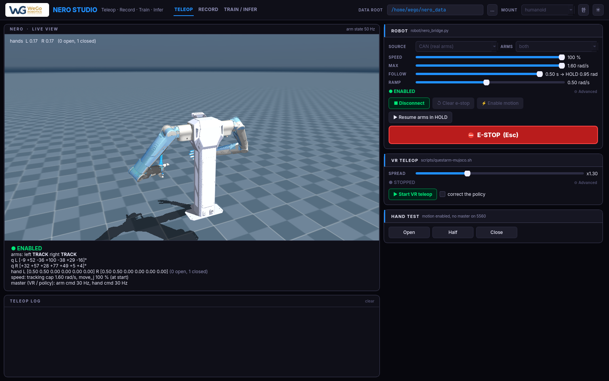
The window has three pages, chosen in the header:
| Page | Left side | Cards on the right |
|---|---|---|
| TELEOP | Live 3D robot view, robot health, TELEOP LOG | ROBOT, VR TELEOP, HAND TEST |
| RECORD | Live cameras, RECORD LOG | STREAMS, CAMERAS, DATA RECORD & REVIEW |
| TRAIN / INFER | Training loss chart, TRAIN / INFER LOG | DATASET, TRAINING, INFERENCE, BOX CYCLE |
Only the page on screen is drawn: the cameras are decoded only while RECORD is shown. This keeps the robot PC's CPU for the policy.
Each card has a head strip with its name, the program it drives, and a status chip (§7). ⚙ Advanced on a card shows the settings you rarely change.
Panel reference — every control
Skip this section on a first read; come back to it when you want to know exactly what something does.
6.1 Header
| Control | What it does |
|---|---|
| TELEOP / RECORD / TRAIN / INFER | Switch pages |
| DATA ROOT | The folder all data lives under (default ~/nero_data). … picks another |
| MOUNT | humanoid (Revo2 hands) or humanoid_gripper (2-finger gripper). Locked while the bridge, VR or a recording runs |
| 한 / EN | Korean or English, immediately. Tooltips and logs stay in English |
| ☀ / ☾ | Light or dark theme, immediately |
Under DATA ROOT:
| Folder | Holds |
|---|---|
recordings/<task>/episode_*.hdf5 |
One folder per task, one file per take |
lerobot/<repo id>/ |
Converted datasets |
train/<date>_<time>_<policy>/ |
Training runs and their checkpoints |
logs/teleop_<date>.log |
The TELEOP log and the inference output, with times |
logs/takeover_<date>.jsonl |
VR corrections of a running policy (§16) |
library/*.npz |
Motion libraries for the motion player (§14) |
box_*.ts |
Object detectors for the object gate (§15); the newest one is loaded by default |
head_train_ref.jpg |
The training view that Tune overlays (§15) |
6.2 ROBOT card
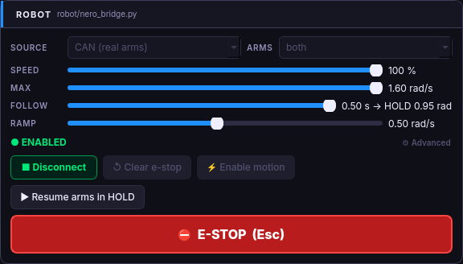
| Control | What it does |
|---|---|
| SOURCE | CAN (real arms), or mock (no robot): simulated arms for practice |
| ARMS | both, left or right |
| SPEED | The arm SDK's move speed, 1–100 %. Applied live while connected |
| MAX | The bridge's tracking speed cap, 0.05–1.60 rad/s. Applied live while connected. The VR server reads it once, when VR starts |
| FOLLOW | How far an arm may trail its command before the bridge puts it in HOLD. The label shows the resulting limit: 0.15 rad + FOLLOW × MAX. Applied live |
| RAMP | The speed toward a far command: after Enable, and after Resume from a HOLD. Applied live |
| ▶ Connect (observe) | Start the bridge. The arms report their joints; no motor moves. Becomes ■ Disconnect |
| ↺ Clear e-stop | Reset an arm latched in e-stop. Its motors power off at once: a raised arm drops. Lower or support the arms first |
| ⚡ Enable motion | Enable the motors. The arms hold where they are; the first command is approached at RAMP speed |
| ▶ Resume arms in HOLD | Continue an arm that stopped in HOLD; it re-approaches the current command at RAMP speed |
| E-STOP (Esc) | Damped stop of both arms through the bridge started here. The physical E-stop stays the primary one |
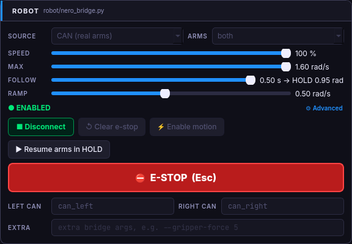
| ⚙ Advanced | What it does |
|---|---|
| LEFT CAN / RIGHT CAN | CAN interface names, can_left / can_right |
| EXTRA | Extra bridge arguments, e.g. --gripper-force 5 |
SOURCE, ARMS, the CAN names and EXTRA are read at Connect; they are locked while the bridge runs.
6.3 VR TELEOP card
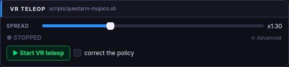
| Control | What it does |
|---|---|
| SPREAD | Multiplies the operator's left–right hand motion on the robot (×1.00–×2.00). The robot's palms start 0.44 m apart, wider than an operator's hands, so at ×1 the operator's hands meet before the robot's. Read when VR starts |
| ▶ Start VR teleop | Start the VR server: mount from the header, speed from MAX, spread from SPREAD. Becomes ■ Stop VR |
| correct the policy | Start VR beside a running policy instead of driving the arms alone (§16). Set it before Start VR |
| ⚙ ARGS | Extra VR server arguments; default --godot --w-pos 20 |
A changed MAX or SPREAD reaches the VR server only at its next start; the log says so.
6.4 HAND TEST card
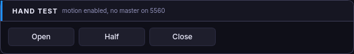
Open, Half, Close send one hand command to both hands for about 1.2 s; the hands then hold. It works only with motion enabled and with no VR server or policy commanding the hands.
6.5 Live view and robot health (TELEOP, left)
- The 3D view shows NERO from behind, as the operator stands: the measured joints and hand closure. When an arm trails its command by more than 0.03 rad, the command appears as a translucent blue ghost arm. Drag to turn the view; double-click to reset it.
- Without measured joints the model stands at the VR home pose and the view says no measured arm state on 5561.
- Health lines under it: the bridge state; each arm's mode (
TRACK,IDLE, HOLD — press ▶ Resume); the last fault; joint angles in degrees; hand closure (0 open, 1 closed); the Revo2 Touch device of each hand; the speed caps in force; and which master (VR or policy) is commanding, at what rate.
6.6 STREAMS card (RECORD)
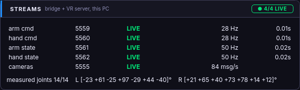
Every data stream on this PC with its port, state (LIVE, STALE, OFF), rate and age: arm command 5559, hand command 5560, measured arm 5561, measured hand 5562, cameras 5555. The last line gives the measured joints in degrees. It shows streams started from a terminal too.
6.7 CAMERAS card (RECORD)
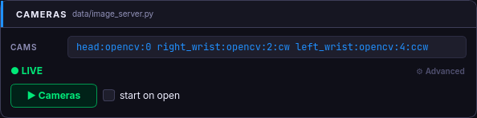
| Control | What it does |
|---|---|
| CAMS | The cameras, space-separated NAME:TYPE:ID[:WxH][:ROT], e.g. head:opencv:0 right_wrist:opencv:2:cw left_wrist:opencv:4:ccw. The tooltip has the full syntax |
| ▶ Cameras | Start or stop the camera server. A camera that drops off USB reconnects by itself |
| start on open | Start these cameras whenever the panel opens |
| ⚙ LOCK | Fix exposure, white balance and focus, e.g. all:auto_exposure=1,exposure_time_absolute=83; empty = each camera's own auto. Set again after a USB reconnect and saved in every take. Control names: v4l2-ctl -d /dev/videoN --list-ctrls (needs v4l-utils); the tooltip lists the C920's quirks |
| ⚙ DEPTH / FPS | Cameras that also send depth (RealSense only); frame rate (default 30) |
Keep one camera setup per dataset: same names, sizes and rotations. The converter skips takes whose camera size differs from the first take's.
6.8 DATA RECORD & REVIEW card (RECORD)
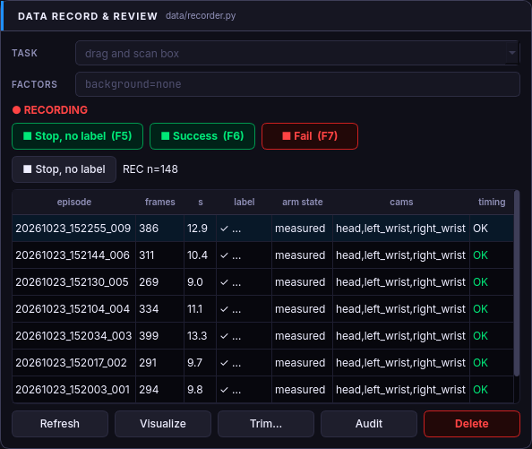
| Control | What it does |
|---|---|
| TASK | A plain instruction, e.g. put the cup on the tray (example application: drag and scan box). Each task gets its own folder. Pick an existing one or type a new one |
| FACTORS | key=value pairs saved in every take, e.g. background=none lighting=day operator=op1. Used later to pick or hold out takes |
| ● Record (F5) | Start a take. While recording it becomes ■ Stop, no label (F5) |
| ■ Success (F6) | Stop and label the take a success |
| ■ Fail (F7) | Stop and label it a failure; the panel asks why |
| ■ Stop, no label | Stop without a label |
| Episode table | The task's takes, newest first: frames, seconds, label, measured or command-only arm state, cameras, and the timing verdict (OK / WARN / BAD; hover for the reasons) |
| Refresh | Re-read the folder |
| Visualize | Open the selected take in the 3D replay viewer (also: double-click a row) |
| Trim… | Keep a span of the take (§12) |
| Audit | Timing report for every take of the task |
| Delete | Delete the selected take. Cannot be undone |
6.9 DATASET card (TRAIN / INFER)
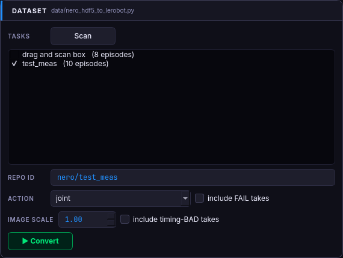
| Control | What it does |
|---|---|
| TASKS | Every task folder with its number of takes. Tick the ones to convert. Scan re-reads them |
| REPO ID | The dataset's name, owner/name, e.g. nero/drag_scan_20261101_s05 |
| ACTION | joint (joint angles, the default) or ee (palm poses) |
| include FAIL takes | Convert failed takes too (off by default) |
| IMAGE SCALE | Shrink every camera before training: 1 for ACT, Advanced ACT and SmolVLA; 0.5 for Diffusion. Give each scale its own REPO ID |
| include timing-BAD takes | Convert takes the audit calls BAD (off by default) |
| ▶ Convert | Build the dataset. An existing REPO ID is rebuilt after asking |
6.10 TRAINING card (TRAIN / INFER)
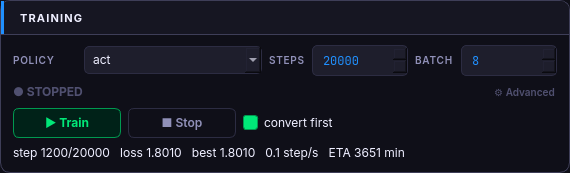
| Control | What it does |
|---|---|
| POLICY | act, advanced act, diffusion or smolvla (§13) |
| STEPS / BATCH | Training steps and batch size. A checkpoint is saved every quarter of STEPS |
| ▶ Train / ■ Stop | Start or stop training on this PC's GPU |
| convert first | Convert the ticked tasks to REPO ID before training |
| Status line | Step, loss, best loss, steps per second and time left; warns on GPU out of memory or a NaN loss |
| ⚙ EXTRA | Extra training arguments; one with the same key replaces the recipe's |
The TRAINING LOSS chart on the left plots the loss on a log scale as training runs.
6.11 INFERENCE card (TRAIN / INFER)
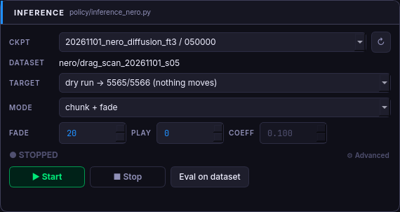
| Control | What it does |
|---|---|
| CKPT | Every checkpoint under DATA ROOT/train, newest first, and every motion library. ↻ re-reads them |
| DATASET | The dataset the checkpoint was trained on, read from the checkpoint |
| TARGET | dry run → 5565/5566 (nothing moves), or ROBOT → 5559/5560 (bridge) |
| MODE | chunk, chunk + fade, temporal ensemble or motion player (§14) |
| FADE / PLAY | chunk + fade only: blend length in control steps, and actions played per chunk (0 = auto) |
| COEFF | temporal ensemble only: the blending weight |
| ▶ Start / ■ Stop | Start or stop the policy |
| Eval on dataset | Replay the dataset's takes through the policy and plot its error against the operator, joint by joint. Nothing moves |
| ⚙ TASK | The task text given to language policies (default: the dataset's) |
6.12 BOX CYCLE card (TRAIN / INFER)
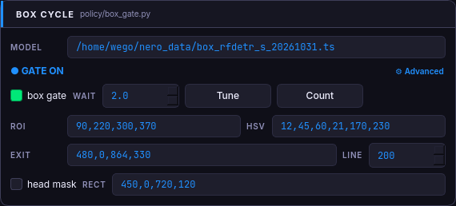
The card is named after the first application, but works for any object the head camera can see.
| Control | What it does |
|---|---|
| MODEL | The object detector (box_*.ts). Empty: a colour test (HSV) instead |
| box gate | Run the policy only when an object is in the pickup area, and return to the start pose after each run (§15). Untick it for tasks with no trigger object |
| WAIT | Seconds the object must stay in the pickup area before a run starts (default 2) |
| Tune | Open the head camera with the pickup and exit areas drawn, and the training view overlaid (§15). Press again, or close the window, to stop |
| Count | Start or stop the object counter (§15) |
| ⚙ ROI | The pickup area in the head image, X0,Y0,X1,Y1 |
| ⚙ HSV | The colour range of the colour test |
| ⚙ EXIT / LINE | The area finished objects leave through, and the image row an object crosses when it leaves |
| ⚙ head mask / RECT | Paint over an area of the head image before the policy sees it |
6.13 Keyboard
| Key | Action |
|---|---|
| F5 | Record / stop without a label |
| F6 | Stop, success |
| F7 | Stop, failure |
| Esc | E-STOP |
Status chips
| Card | Chip | Meaning |
|---|---|---|
| ROBOT | OFFLINE | No bridge started from this panel |
| STARTING | The bridge is connecting to the arms | |
| OBSERVE | Connected; joints are read; motors are off | |
| ENABLED | Motors on; the arms follow the command | |
| FAULT | An arm reported a fault; the reason is in the health lines | |
| VR TELEOP | RUNNING / CORRECTING / STOPPED | VR drives the arms / VR corrects a policy / not running |
| STREAMS | n/4 LIVE / OFF | How many of the four robot streams (5559–5562) are live |
| CAMERAS | LIVE / OFF | Camera frames arriving |
| DATA RECORD | RECORDING / READY / STOPPED | A take is being recorded / the recorder waits / not running |
| DATASET | CONVERTING | A conversion is running |
| TRAINING | TRAINING / STOPPED | |
| INFERENCE | ROBOT / DRY RUN / STOPPED | Where the running policy sends its commands |
| BOX CYCLE | GATE ON / GATE OFF, · COUNTING | Box gate on or off; the object counter running |
Arm modes in the health lines: TRACK (following), IDLE, HOLD (stopped by the follow limit: press ▶ Resume arms in HOLD), FAULT.
Before you begin
- The arms are powered and their CAN interfaces are up (
can_left,can_right). - The hands are connected; the health lines will show a Revo2 Touch device for each.
- The cameras are plugged into the same USB ports as when the dataset was recorded.
- The robot and the head camera are where they were during recording (check with Tune, §15).
- The workspace is clear, and the physical E-stop is within reach.
Teleoperating with VR
- TELEOP → ▶ Connect (observe). Wait for OBSERVE. The 3D view now shows the real arms.
- Put the arms in a safe pose, then ⚡ Enable motion and confirm. The chip turns ENABLED. The arms hold where they are.
- ▶ Start VR teleop. Put on the headset and open the NERO VR app.
- On each controller (X left, A right): press and hold to grab the arm where it is, release to make it follow your hand. Press again any time to re-grab: the arm stays, your hand moves.
- Y (left) / B (right) stops that arm (it holds). Losing tracking also holds it.
- The grip button closes the four fingers; the thumbstick moves the thumb.
- The app's HOME sends an arm home, palms lifted first so they leave the table upward.
- To finish: ■ Stop VR, lower the arms, ■ Disconnect.
Settings that the team tested on the robot (2026-11-03): SPEED 100 %, MAX 1.60 rad/s, FOLLOW 0.50 s (HOLD at 0.95 rad). If fast moves put an arm in HOLD, raise FOLLOW. If the robot's hands cannot meet in front of it, raise SPREAD and restart VR.
Emergency stop, HOLD and clearing
- E-STOP (Esc) stops both arms (damped) through the bridge this panel started. A bridge started in a terminal does not take the button: use the physical E-stop, always the primary one.
- Disconnect or closing the panel while motion is enabled also ends in the damped e-stop: the arms sink. The panel asks first. Lower the arms before you disconnect.
- After an e-stop the arm stays latched: ⚡ Enable motion is refused with arm is in e-stop. Lower or support the arms, press ↺ Clear e-stop (the motors power off: a raised arm drops), then ⚡ Enable motion again.
- HOLD is not an e-stop. The bridge stops an arm that fell too far behind its command (FOLLOW). The health lines show HOLD — press ▶ Resume. Press ▶ Resume arms in HOLD; the arm re-approaches the command at RAMP speed.
Recording demonstrations
To record
- Start the cameras (RECORD → ▶ Cameras) and VR teleop (§9). STREAMS should show 4/4 LIVE and the cameras LIVE.
- Type the TASK, and the FACTORS that describe this session.
- F5 to start. Do the task.
- F6 if it succeeded, F7 if not (give the reason), F5 to stop without a label.
The panel refuses to record without a VR (or policy) command on 5559, and warns when the measured arm state is missing: the take would then hold the command instead of the measured joints.
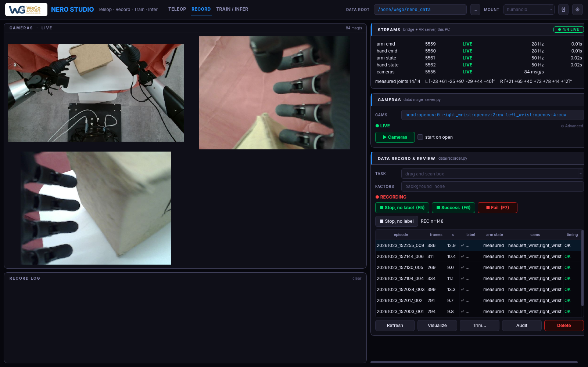
What makes a good dataset
- The same camera setup in every take: same cameras, USB ports, sizes, rotation and camera settings (⚙ LOCK in CAMERAS). Different camera settings across sessions are a different dataset to the policy.
- The same head view: before a session, open Tune and line the robot and camera up with the training view (§15). When the head view moved, the policy's success dropped.
- Start every take from the same pose, with the arms still. The policy's start pose is the takes' start pose.
- Do the task the same way every time. Two ways of doing one task confuse a policy.
- Label honestly, and delete takes of a second or less: they hold no task.
- Audit a ~60 s test take before a session, and the whole folder before converting.
Reviewing and editing recordings
Select a take in the episode table:
- Visualize (or double-click) replays it in 3D with its cameras.
- Trim… shows the take's camera with two sliders, start and end. Keep selection rewrites the file with only that span (asks first; cannot be undone). Trimmed takes show .
- Audit lists every take of the task with each camera's rate and its age against the joints, and the reasons for a WARN or BAD: slow camera, skewed camera/joint pairing, recorder stall, arm not following its command (HOLD). BAD takes are skipped at Convert unless include timing-BAD takes is ticked.
- Delete removes the take for good (asks first).
Training a policy
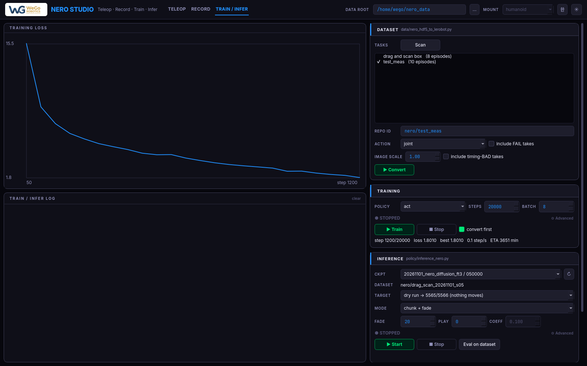
- DATASET: tick the tasks, set a new REPO ID, set IMAGE SCALE for the policy (below).
- TRAINING: pick the POLICY, STEPS and BATCH; leave convert first ticked.
- ▶ Train. The chart and the status line follow the run. Checkpoints appear under DATA ROOT/train and in the CKPT list.
- Eval on dataset (INFERENCE card) to check a checkpoint against the operator.
| POLICY | What it is | IMAGE SCALE | BATCH |
|---|---|---|---|
act |
LeRobot ACT, ResNet18 image encoder | 1 | 8 |
advanced act |
ACT with a DINOv3 ViT-S/16 image encoder (needs timm) |
1 | 8 |
diffusion |
The Diffusion Policy real-robot recipe at 30 Hz, EMA weights, image augmentation | 0.5 | 64 |
smolvla |
Fine-tunes lerobot/smolvla_base on the task text |
1 | 64 |
The panel warns when a Diffusion dataset is not at scale 0.5 or BATCH is below 32.
act, advanced act and smolvla start from third-party pretrained weights. scripts/wego-install-downloads installs them after showing each licence (§4); ▶ Train refuses a policy whose weights are not installed. Nothing is downloaded during training.
Where to train. The panel trains on the GPU of the PC it runs on. Long runs (Diffusion over many thousands of steps) are run on the training PC with the same scripts; the exact command appears at the top of the log when you press Train. Copy the checkpoint folder back under DATA ROOT/train to run it.
Fine-tuning for a new place. When the scene changes (new site, moved robot), record new takes there, convert them alone, and fine-tune the existing checkpoint on them rather than training from scratch.
Reading the result. Eval on dataset plots each joint's error against what the operator did, on the training takes themselves; the tool's pass mark is under 2° average arm error. A large error there means a data or setup problem (dataset stats, feature names, action order); more steps will not fix it. A small error shows the policy fits its data, not that it will succeed on the robot.
Running a policy on the robot
- Pick the CKPT. Check that DATASET shows the dataset it was trained on.
- Start the cameras (the policy sees them) and connect + enable the robot (§9). No VR.
- Choose MODE (below) and set TARGET → dry run. ▶ Start: the policy loads and runs and the log follows it, but nothing moves. ■ Stop.
- Set TARGET → ROBOT and ▶ Start. Confirm the dialog.
- The arms first move to the start pose of the training takes, at the bridge's ramp speed. With the box gate on, the robot then waits for an object (§15); without it, the policy starts and runs until ■ Stop.
- ■ Stop ends the policy. The bridge holds the arms where they are; the hands keep their grip.
| MODE | How it plays the policy's plans | Use |
|---|---|---|
| chunk | Each planned chunk is played to its end, then the next is planned | ACT baseline |
| chunk + fade | The next chunk is planned in the background and blended in over FADE steps | Diffusion and ACT on NERO. Tested on the example application: FADE 20, PLAY 0 (auto) |
| temporal ensemble | Re-plan as fast as possible and average overlapping chunks (COEFF) | ACT only; did not work on NERO or G1 |
| motion player | No policy: replays the recorded take whose object was nearest to the object the detector sees | Experimental fallback; needs the box gate and MODEL, and a LIBRARY in CKPT |
PLAY (chunk + fade): 0 = auto (the policy's chunk length minus FADE). A smaller value plans more often, so the arm reacts sooner to where the object is.
The policy runs inside the same bridge limits as VR teleop (MAX, FOLLOW). Every inference line also
goes to DATA ROOT/logs/teleop_<date>.log, in the bridge's timeline.
The object gate: run only when there is work
Many tasks start when an object arrives: a part on a conveyor, an item put on the table. With box gate ticked (BOX CYCLE card), the policy runs in a loop that waits for one:
| State | What the robot does | Ends when |
|---|---|---|
| HOME | Holds the start pose and watches the pickup area (ROI) in the head camera | An object is seen there and is still there WAIT s later → RUN |
| RUN | A fresh run of the policy | The object leaves past LINE through the EXIT area (watched from 8 s into the run; only if EXIT is set), or (with MODEL) no object is left in the work area for 2 s because it was taken away or fell, or the run times out (1.5 × the longest training take), or the arm stands still for 3 s → RETURN |
| RETURN | Palms lifted 5 cm, then a smooth move to the start pose | Start pose reached → HOME |
Only the head camera decides. With MODEL set, the object detector finds the objects; without it, a colour test does: the share of ROI pixels inside the HSV range. The colour test is quick to set up but fires on anything of that colour (skin, wood, a coloured belt) and misses objects in shade. A detector trained on your object is more reliable (§17).
Untick box gate for tasks that have no trigger object: the policy then starts as soon as the arms reach the start pose and runs until ■ Stop.
ROI is the end of the incoming conveyor where a parcel
waits; EXIT is the outgoing conveyor, and LINE is the row a parcel rides past after the robot has
pushed it on. MODEL is the parcel detector box_rfdetr_s_20261031.ts (RF-DETR Small, trained on
hand-labelled head-camera frames of this task; it finds cardboard parcels only). A run ends when the
parcel rides out, or when a person takes away a parcel that got stuck.
Tune: check the view and the areas
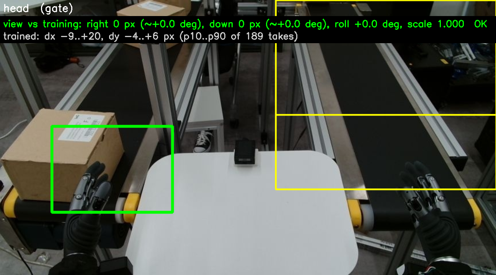
Tune opens the head camera large, with:
- the pickup ROI: red, green while it sees an object;
- the EXIT area and LINE: yellow, green while an object leaves;
- the detector's boxes (blue), and the head mask (magenta) if on;
- the training view (DATA ROOT/head_train_ref.jpg) blended 50/50 over the live image, and the line view vs training: how far the view is off in pixels and degrees. OK in green means within 15 px, 2 % scale and 1° roll. The second line gives the range the training takes covered.
If the view is off, move the robot or the camera until the overlay lines up and OK appears. A policy only works in the view it was trained in. Close Tune with its window's ✕ or the Tune button. For a new task, make its own training view first (§17).
Count: how many objects were finished
Count runs the object counter beside teleop or a policy. It only reads the head camera and
publishes nothing. An object counts once when it moves up the head image through EXIT, from below
image row 250 to above it (EXIT must be set; the counter uses its own row, not LINE). Each count is
appended to ~/nero_data/parcel_count_<date>.csv; a restart the same day carries on from the last
count.
In the parcel task the outgoing conveyor carries parcels away from the
robot, which is up in the head image. On the 189 takes of 2026-11-01 the counter counted 188 parcels.
For another layout: the row is --count-line of policy/parcel_counter.py (not a panel field), and
the upward direction is fixed in the code.
Correcting the policy from VR
To collect corrections where the policy goes wrong (HG-DAgger):
- Connect and enable the robot. On TELEOP tick correct the policy, then ▶ Start VR teleop (the chip says CORRECTING).
- Start the policy on ROBOT (§14). It drives; VR follows the robot.
- When the policy goes wrong, press X / A: you take that arm over from where the policy put it.
- Press Y / B to give it back. The policy starts over 1 s later from where you left it.
- Record the takes as usual (§11). Each takeover is logged to
DATA ROOT/logs/takeover_<date>.jsonl;data/cut_takeovers.pycuts the corrections out of the recorded takes for training.
Adapting NERO Studio to a new task
Most of the panel needs nothing new for a new task. What changes is the data, the scene, and, if you use it, the object gate.
What works for any task as it is
Teleoperation (§9), the e-stop and HOLD (§10), recording, labels and the timing audit (§11–12), conversion and the four training recipes (§13), the inference modes (§14) and VR correction (§16). None of them knows what the task is: the policy learns it from your takes.
What to set for each new task
| Item | What to do |
|---|---|
| TASK | A new, plain instruction. It names the task's folder, is saved in every take, and is the instruction SmolVLA learns from |
| FACTORS | The things that vary across your sessions (background, lighting, operator, object type). They let you pick or hold out takes later |
| MOUNT | humanoid for the Revo2 hands, humanoid_gripper for the 2-finger gripper. Record and run with the same mount |
| Cameras | Choose the camera setup once for the task and keep it for every take (§11) |
| Start pose | Nothing to set: it comes from your takes (the converter writes it). Start every take from the same pose |
| Scene | Fix the robot, camera and work area before recording, and keep them there. Note the robot's position and height |
| Training view | After the first session, make the Tune reference from the new takes (below) |
| REPO ID | A new dataset name. Do not mix takes of different tasks or scenes in one dataset unless you mean to |
| Policy and steps | Start with the recipes in §13. Check each checkpoint with Eval on dataset, then dry run, then the robot |
Make the training view for Tune from the task's takes (run in the repository, with the robot PC's Python):
.venvs/questarm/bin/python3 policy/box_gate.py --build-ref <DATA ROOT>/recordings/<task folder> \
--out <DATA ROOT>/head_train_ref.jpg
It picks the take with the typical first head frame and writes the image and the takes' spread
(head_train_ref.json) for Tune's view vs training line.
The object gate for a new task
Use the gate only if your task starts when an object arrives (§15). Then:
- Choose how to see the object.
- Colour test: leave MODEL empty and set HSV to the object's colour. Check it with Tune: the ROI must turn green with the object and stay red without it, including with arms and people in view.
- Detector: train a detector for your object and set MODEL to it. The gate loads an
RF-DETR model, either its TorchScript export (
.ts, runs on the robot PC's policy environment as it is, on a CUDA GPU) or a training checkpoint (.pth, needs therfdetrpackage). Every detection above confidence 0.5 counts as the object. Detector training is not part of the panel; the parcel detector's labelling, training and export scripts are in~/nero_data/det/box_20261031/tools/on the development PC. Put the.tsunder DATA ROOT asbox_<name>.tsand the panel loads the newest one by default.
- Draw the areas in ⚙ Advanced with Tune open: ROI where the object waits; EXIT and LINE where finished objects leave, if they do (leave EXIT empty otherwise; a run then ends on the other rules of §15).
- Set WAIT to how long the object should rest before the robot starts.
- Check the fixed run-end values below. They suit the parcel task; they are not panel fields.
| Value | Default | Meaning |
|---|---|---|
--exit-after |
8 s | EXIT is watched only after this time into a run |
--box-gone |
2 s | With MODEL: the run ends when no object has been seen in the work area for this long (0: off) |
--box-gone-ymin |
row 150 | The work area for --box-gone: object centres below this head-image row |
--run-timeout |
1.5 × longest take | The longest a run may last |
--home-lift / --home-speed |
0.05 m / 0.3 | RETURN: palms rise this far first, then move to the start pose at this speed |
--box-conf |
0.5 | Detector confidence threshold |
To change them, run policy/inference_nero.py from a terminal with the panel's command line (the
[infer] $ … line in the TRAIN / INFER log when you press ▶ Start) plus your values, or change
their defaults in policy/inference_nero.py and policy/box_gate.py.
Saved settings
Every field and slider is saved when the panel closes and restored at the next start: speeds, CAN
names, VR arguments, cameras, task factors, dataset and training choices, inference mode and its
numbers, the object-gate areas, the page, theme and language. They are stored in
~/.config/WeGo/NeroStudio.conf.
Settings in use on the robot PC on 2026-11-03, for the example application:
| Setting | Value |
|---|---|
| SPEED / MAX / FOLLOW | 100 % / 1.60 rad/s / 0.50 s |
| INFERENCE MODE / FADE / PLAY | chunk + fade / 20 / 0 (auto) |
| box gate / WAIT / MODEL | on / 2 s / ~/nero_data/box_rfdetr_s_20261031.ts |
Connecting your own software
All data moves on local ZeroMQ sockets that any program can read:
| Port | Stream |
|---|---|
| 5559 / 5560 | Arm / hand command (VR server or policy → bridge) |
| 5561 / 5562 | Measured arm / hand (bridge) |
| 5555 | Camera frames (image server) |
| 5565 / 5566 | Policy commands in a dry run (nothing listens) |
| 5569 / 5570 | VR corrections while correcting a policy (§16) |
The message format and the joint order are in nero-zmq-api.md. Publish on 5559/5560
only when nothing else does: one master at a time.
Safety guidelines
- Keep people and obstacles out of the arms' reach while motion is enabled.
- Keep the physical E-stop within reach; it is the primary stop.
- Connect in observe mode first; enable only with the arms in a safe pose and the workspace clear.
- Clear e-stop powers the motors off: a raised arm drops. Lower or support the arms first.
- Lower the arms before Disconnect or closing the panel.
- Try every new policy as a dry run first, then on the robot in clear space, hand on the E-stop.
- If anything looks or sounds wrong, stop first, then find out why.
When something goes wrong
| Symptom | Cause and fix |
|---|---|
| 5561 is already published at Connect | A bridge runs elsewhere (a terminal). Stop it; one program owns the CAN buses |
| Enable refused: arm is in e-stop | The arm is latched by the last stop. Lower the arms, ↺ Clear e-stop, then Enable (§10) |
| An arm shows HOLD | It fell behind its command. ▶ Resume arms in HOLD; raise FOLLOW if it happens on fast moves |
| An arm shows FAULT | The arm reported a fault (the reason is in the health lines). Stop, check the arm and its CAN cable |
| No arm command on 5559 at Record | Start VR teleop first |
| Start VR or Start policy refused: 5559 already published | VR and a policy cannot both drive. Stop one (or use correct the policy, §16) |
| No camera image | ▶ Cameras; check CAMS. Camera numbers change when USB is re-plugged |
| The 3D view is a stick figure | No MuJoCo or OpenGL in this environment; the terminal says why. Everything else works |
| Convert skipped takes | BAD timing or a different camera size; see Audit |
| GPU out of memory: lower BATCH | Lower BATCH, or the IMAGE SCALE |
| The policy reaches beside the object | Check the view with Tune (§15) and the robot's height and position |
| The motion player does not start | It needs box gate on and a MODEL |
| ▶ Train refused: … starts from pretrained weights that are not installed | That policy's weights are missing. Run scripts/wego-install-downloads (it shows the licence first); on a PC set up with an older version, --models-dir ~/.cache (§4) |
| Install stops: sha256 … != pinned … (refused) or THESE PACKAGES DO NOT MATCH THE HASHES | The downloaded file is not the pinned one: a broken download, a proxy, or a changed source. Nothing was installed from it. Run the command again; if it repeats, send the output to WeGo |
| Train, Eval or Infer stop because CUDA is not available | The GPU components are not installed (--cpu-only, or NVIDIA's licence declined). scripts/wego-install-downloads --check shows it; scripts/wego-install-downloads installs them |
The TELEOP log is also written to DATA ROOT/logs/teleop_<date>.log. When you report a problem, send
that file and say what you were doing.
Licences
- WeGo software. NERO Studio, NERO VR and the tools in the repository are WeGo Robotics software
under
LICENSE(WeGo Robotics General Licence Terms). You may use and modify them for your own internal purposes with robot systems obtained from WeGo Robotics or its authorised partners, but not distribute them outside your organisation. The agreement under which you received the software prevails. The terms never narrow what third-party licences give you. For components under the GNU LGPL, you may modify the component, replace it with a modified version, and reverse engineer the software as far as needed to debug such modifications. - Third-party components.
THIRD_PARTY_NOTICES.mdlists every third-party item, with its licence: those in the repository, in the VR app, or installed by the setup scripts. The licence texts are inlicenses/. The NERO Studio window uses Qt for Python (PySide6, LGPL-3.0), installed separately so it can be replaced. - Downloaded at installation. WeGo does not distribute NVIDIA's CUDA libraries or the pretrained
weights (§4).
wego-install-downloadsshows each licence and installs them only after you accept. - VR app. The 라이선스 (licences) button on the VR console opens a panel. It shows WeGo's
notice, the Revo2 hand model attribution, the Godot Engine licence and its third-party notices, and
the licence files bundled in the app. The APKs come with
nero-vr-<version>-sources.tar, the source of the app's one weak-copyleft part (Mozilla's CA certificate bundle, MPL-2.0). - Advanced ACT checkpoints contain DINOv3 weights. A delivered checkpoint comes with a copy of the DINOv3 License. Its prohibited uses include military, ITAR and weapons applications, and published research must acknowledge DINOv3.